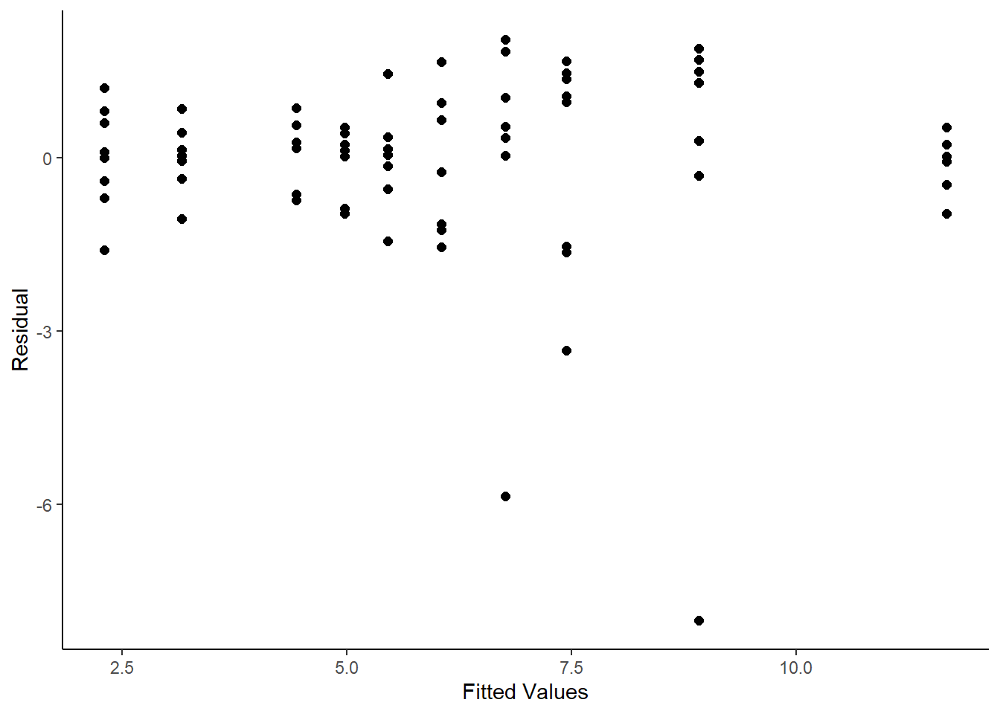

library(car)
library(dae)
library(dplyr)
library(emmeans)
library(ggplot2)
library(lmerTest)
library(magrittr)
library(predictmeans)
library(supernova)
data(DataExam3.1)
# Pg. 28
fmtab3.3 <- lm(formula = Ht ~ Repl*SeedLot, data = DataExam3.1)
fmtab3.3ANOVA1 <-
anova(fmtab3.3) %>%
mutate(
"F value" = c(anova(fmtab3.3)[1:2, 3]/anova(fmtab3.3)[3, 3]
, anova(fmtab3.3)[4, 3]
, NA)
)
# Pg. 33 (Table 3.3)
fmtab3.3ANOVA1 %>%
mutate(
"Pr(>F)" = pf(q = fmtab3.3ANOVA1[ ,4]
, df1 = fmtab3.3ANOVA1[ ,1]
, df2 = fmtab3.3ANOVA1[4,1], lower.tail = FALSE)
)
Df Sum Sq Mean Sq F value Pr(>F)
Repl 1 20.30 20.301 3.4197 0.06864 .
SeedLot 4 505.87 126.467 21.3035 0.0000000000159 ***
Repl:SeedLot 4 23.75 5.936 2.5088 0.04955 *
Residuals 70 175.61 2.509
---
Signif. codes: 0 '***' 0.001 '**' 0.01 '*' 0.05 '.' 0.1 ' ' 1
# Pg. 33 (Table 3.3)
emmeans(object = fmtab3.3, specs = ~ SeedLot)
SeedLot emmean SE df lower.CL upper.CL
Acacia 10.29 0.396 70 9.50 11.08
Angophora 7.10 0.396 70 6.31 7.89
Casuarina 5.51 0.396 70 4.72 6.30
Melaleuca 4.94 0.396 70 4.15 5.73
Petalostigma 2.73 0.396 70 1.94 3.52
Results are averaged over the levels of: Repl
Confidence level used: 0.95
# Pg. 34 (Figure 3.2)
ggplot(mapping = aes(x = fitted.values(fmtab3.3), y = residuals(fmtab3.3)))+
geom_point(size = 2) +
labs(
x = "Fitted Values"
, y = "Residual"
) +
theme_classic()
# Pg. 33 (Table 3.4)
DataExam3.1m <- DataExam3.1
DataExam3.1m[c(28, 51, 76), 5] <- NA
DataExam3.1m[c(28, 51, 76), 6] <- NA
fmtab3.4 <- lm(formula = Ht ~ Repl*SeedLot, data = DataExam3.1m)
fmtab3.4ANOVA1 <-
anova(fmtab3.4) %>%
mutate(
"F value" = c(anova(fmtab3.4)[1:2, 3]/anova(fmtab3.4)[3, 3]
, anova(fmtab3.4)[4, 3], NA))
# Pg. 33 (Table 3.4)
fmtab3.4ANOVA1 %>%
mutate(
"Pr(>F)" = pf(q = fmtab3.4ANOVA1[ ,4]
, df1 = fmtab3.4ANOVA1[ ,1]
, df2 = fmtab3.4ANOVA1[4,1], lower.tail = FALSE)
)
Df Sum Sq Mean Sq F value Pr(>F)
Repl 1 18.88 18.877 10.4201 0.001931 **
SeedLot 4 588.68 147.169 81.2367 < 0.00000000000000022 ***
Repl:SeedLot 4 7.25 1.812 0.7497 0.561661
Residuals 67 50.23 0.750
---
Signif. codes: 0 '***' 0.001 '**' 0.01 '*' 0.05 '.' 0.1 ' ' 1
# Pg. 33 (Table 3.4)
emmeans(object = fmtab3.4, specs = ~ SeedLot)
SeedLot emmean SE df lower.CL upper.CL
Acacia 10.87 0.224 67 10.42 11.31
Angophora 7.76 0.231 67 7.30 8.22
Casuarina 5.51 0.216 67 5.08 5.94
Melaleuca 4.94 0.216 67 4.51 5.38
Petalostigma 2.73 0.216 67 2.30 3.16
Results are averaged over the levels of: Repl
Confidence level used: 0.95